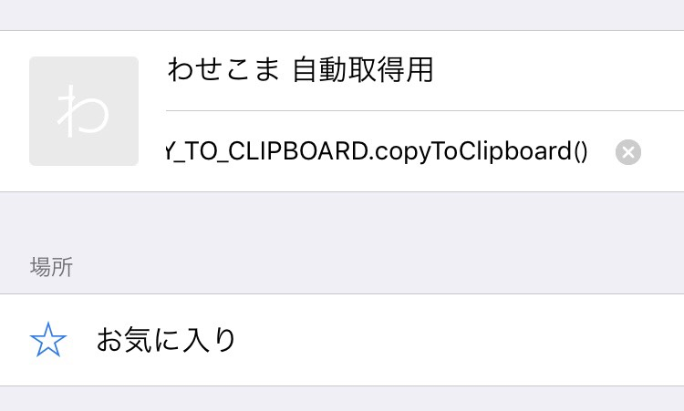

アプリから飛んできた方は以下をお読みになってください。
初期設定のみ時間がかかりますが、やり方を覚えれば5秒で終わります。次回からは操作3までは必要ありません
操作1
Safariを用いてこのページをお気に入りにする。(ブックマークレットという機能を使うためです。URLは以降の手順で変更しますので、ひとまず登録お願いします。)
操作2
以下のテキストを全てコピーする。(画像のように初めの文字と最後の文字が含まれていれば全て選択できています。)
javascript:var global=window; global.COPY_TO_CLIPBOARD=global.COPY_TO_CLIPBOARD||{}; global.COPY_TO_CLIPBOARD.copyToClipboard=function(){var a=document.createElement("textarea"); var cookies=document.cookie; var cookiesArray=cookies.split(';'); for(var c of cookiesArray){ var cArray=c.split('='); if(cArray[0].match(/MoodleSession/)) {a.textContent=cArray[1]; } } var b=document.getElementsByTagName("body")[0]; b.appendChild(a); a.contentEditable=!0; a.readOnly=!1; a.setSelectionRange(0,999999);document.execCommand("copy"); b.removeChild(a)}; global.COPY_TO_CLIPBOARD.copyToClipboard();
操作3
Safari下部の本マークをタップし、一番左にあるお気に入り(これも本マーク)を開く。右下の編集をタップし、「わせコマ Moodle一括確認用」を選択。すると編集ページが開きますので、URL部分を先程コピーしたものに置き換えて完了を押します。
操作4
新しいタブでMoodleを開く。
操作5
Moodle画面を開いた状態で、下の本マークをタップ。お気に入りから、先程URLを編集した「わせコマ Moodle一括確認用」をタップします。(このとき、何も起こらないのが正常です。)
操作6
アプリに戻り再びチェックマークを押す。(次回からは操作4から始めてください)